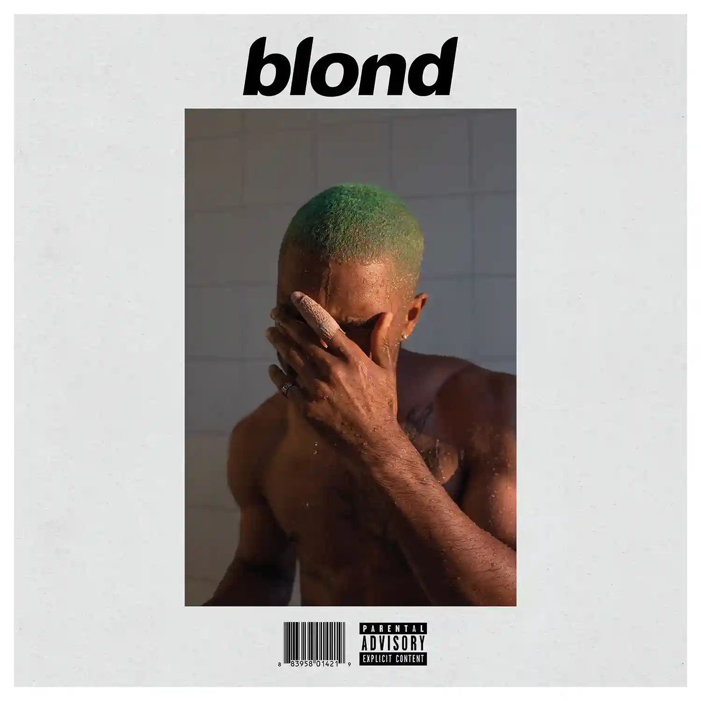
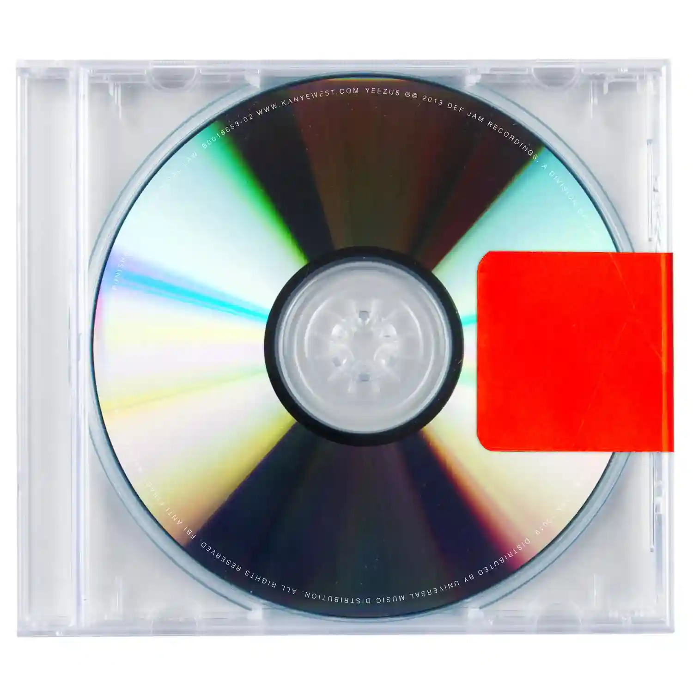

Mis Canciones Favoritas
| Nombre de la Canción | Nombre del Álbum | Duración | Reproducciones | |
|---|---|---|---|---|
| As It Was | Harry's House

|
2:47 | 2.778.815.571 | |
| Cardigan | Folklore

|
3:59 | 984.540.166 | |
| Sicko Mode | Astroworld

|
5:12 | 1.961.107.036 | |
| Positions | Positions

|
2:52 | 1.309.939.696 | |
| God's Plan | Scorpion

|
3:18 | 2.340.125.427 | |
| Happier Than Ever | Happier Than Ever

|
4:58 | 1.146.467.212 | |
| Get Lucky | Random Access Memories

|
6:09 | 453.886.701 | |
| Pink + White | Blonde  | 3:04 | 946.168.538 | |
| Starboy | Starboy

|
3:50 | 2.781.912.227 | |
| Anti-Hero | Midnights

|
3:20 | 1.209.286.641 | |
| Don't Start Now | Future Nostalgia

|
3:03 | 2.397.018.452 | |
| The Hills | Beauty Behind The Madness

|
4:02 | 2.051.986.039 | |
| All Too Well | Red (Taylor's Version) | 10:13 | 671.909.758 | |
| Peaches | Justice

|
3:18 | 1.500.734.891 | |
| Watermelon Sugar | Fine Line

|
2:54 | 2.438.320.012 | |
| Kill Bill | SOS

|
2:33 | 1.423.880.466 | |
| Bound 2 | Yeezus  | 3:49 | 779.580.643 | |
| Bad Guy | When We All Fall Asleep, Where Do We Go?

|
3:14 | 2.378.719.160 |